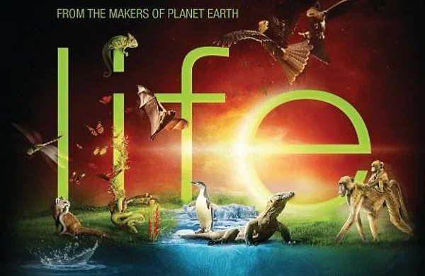

BBC Natural History Unit tarafından hazırlanan ve David Attenborough'nun sunduğu 2009 yapımı Life, on bölüm boyunca hayvanların ve bitkilerin yaşamlarını sürdürme yollarını inceliyor. Seri; üreme, avlanma, iletişim, hareket, beslenme ve yaşam döngüsü gibi temaları farklı canlıların deneyimleri üzerinden anlatıyor.
Her bölüm, belirli bir davranış ya da yaşam alanına odaklanarak izleyicinin tek tek türlerden daha büyük örüntülere bakmasını sağlıyor. Bir canlının avını yakalama biçimi, yavrusunu koruması veya zorlu bir çevrede hareket etmesi, yalnızca etkileyici görüntüler olarak değil, yaşam koşullarına verilen yanıtlar olarak açıklanıyor.
Life'ın güçlü yanı, bilimsel merakı geniş bir izleyici kitlesine ulaştıran görsel anlatımı ve Attenborough'nun anlaşılır sunumu. Türlerin çeşitliliğini yakından tanıtırken, doğadaki her canlı ilişkisinin daha geniş bir ekosistemin parçası olduğunu da hatırlatıyor. Doğa belgesellerine yeni başlayanlar kadar farklı türlerin davranışlarını merak eden izleyicilere de hitap ediyor.